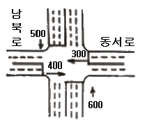
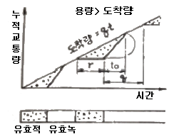
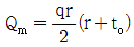
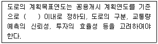
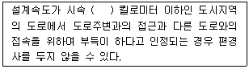
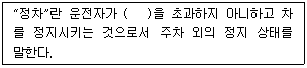

교통기사 (2017-03-05 기출문제)
1과목: 교통계획
1. 어느 도심지의 피크 시 한 시간당 주차요금이 3,000원 일 때 주차수요는 10,000대이고, 주차요금에 대한 수요탄력치가 –0.2 이다. 주차요금이 25% 인상될 경우 수요의 감소량은?
- 250대
- 500대
- 750대
- 1000대
(정답률: 74%)

2. 단기교통계획과 비교하여 장기교통계획이 갖는 특징으로 틀린 것은?
- 소수의 유사한 대안
- 교통수요가 비교적 고정
- 많은 교통수단 동시 고려
- 장기적 관점, 자본집약적
(정답률: 79%)
3. 대중교통수단에 관한 설명으로 옳지 않은 것은?
- 지하철은 대량성, 안정성 면에서 우수하다.
- 지하철은 버스와 연계에 따른 불편이 있을 수 있다.
- 버스는 건설비가 많이 소요되나 정시성이 우수하다.
- 버스는 수요에 대처하기 쉬운 반면, 교통혼잡을 일으키는 단점이 있다.
(정답률: 86%)
4. 경제성 분석기법 중 편익-비용비에 의한 방법의 특징으로 틀린 것은?
- 이해하기 쉽다.
- 할인율을 알지 못하는 경우 유용하다.
- 사업규모를 고려할 수 있다.
- 순편익의 크기가 고려되지 못한다.
(정답률: 81%)
5. TSM 기법 중 승용차의 수요와 교통시설의 공급을 동시에 감소시키는 기법으로 틀린 것은?
- 기존 차로를 이용한 버스전용차로제
- 승용차 통행 제한 구역의 설정
- 주차면적 감소
- 노상주차제한
(정답률: 65%)
6. 자료수집의 용이성과 자료 분석의 편의성을 위한 교통존(traffic zone) 설정기준으로 적합하지 않은 것은?
- 각 존은 가급적 동질적인 토지이용이 포함되도록 한다.
- 행정구역을 가급적 일치시킨다.
- 간선도로가 가급적 존의 경계선과 일치하도록 한다.
- 정밀한 분석을 위해 가급적 존을 크게 한다.
(정답률: 86%)
7. 통행발생(trip generation)단계에서 사용하는 모형은?
- 회귀분석법
- 성장률법
- 프라타법
- 통행단모형법
(정답률: 71%)
8. TSM(Transportation Systems Management)기법의 유형 중 교통수요(차량 수요)만을 감소시키는 효과를 주는 것은?
- 카풀(carpooling) 유도
- 신호주기의 개선
- 교차로에서의 도류화
- 도로 기하구조 개선
(정답률: 85%)
9. 제한속도를 다시 결정하고자 진행하는 차량의 속도조사 시, 속도의 표준편차를 24km/h, 허용오차를 2km/h라 할 때 필요한 표본의 수는? (단, 신뢰도는 95% 이다.)
- 384개
- 400개
- 484개
- 554개
(정답률: 72%)
10. 교통계획을 위한 현황자료 조사에서 인구, 소득, 자동차 보유대수 등 사회경제지표가 가지는 주요 용도와 거리가 먼 것은?
- 교통투자사업의 재원확보 평가지표로 활용
- 통행조사에서 나타난 통행발생의 설명변수로 활용
- 가구면접 조사 표본을 분석 지구 전체에 대해 전수화시키는 경우의 총량지표로 활용
- 토지이용계획안의 수립, 인구와 고용기회를 분포시키는 기초자료로 활용
(정답률: 74%)
11. 단기교통계획의 특징으로 적합한 것은?
- 다수의 대안
- 유사한 대안
- 시설 지향적
- 자본집약적
(정답률: 80%)
12. 통행자가 어느 지점에서 다른 지점으로 통행하고자 할 때 통행비용이 가장 적게 드는 경로를 택한다는 가정을 바탁으로 예측된 모든 통행량을 배정하는 방법은?
- All or Nothing법
- Entropy법
- Frata법
- Logit법
(정답률: 78%)
13. 교통조사에서 교통량이 아주 적은 지역일 때 속도 측정 시 기준으로 하는 최소표본수는?
- 20대
- 30대
- 80대
- 100대
(정답률: 75%)
14. 다음 교통대안 평가방법 중 성격이 다른 하나는?
- AHP 방법
- 순현재 가치 분석법
- 내부수익률 분석법
- 초기년도 수익률 분석법
(정답률: 77%)
15. 일반적으로 보도설치 기준이 되는 보행 교통량으로 옳은 것은?
- 100인/일 이상
- 150인/일 이상
- 200인/일 이상
- 300인/일 이상
(정답률: 70%)
16. 사용자 균형 모형에서는 기본 가정과 원리에 대한 내용으로 틀린 것은?
- 통행자는 모든 링크의 통행시간에 대한 완전한 정보를 가지고 있다.
- 통행자의 통행경로 선택행위는 그들의 통행시간 최소화를 목표로 한다.
- 출발지와 목적지 사이의 통행량은 고정되어 있다.
- 사용자 균형 상태에 도달하면 사회적인 총비용이 최소화된다.
(정답률: 64%)
17. 지능형교총체계의 적용분야가 아닌 것은?
- CVO
- AVCS
- APTS
- QRS
(정답률: 80%)
18. 내부수익률(IRR)이란?
- 할인율과 같다.
- 사업에 따른 기대수익률을 말한다.
- 인플레이션을 감안한 이자율이다.
- 할인율보다 높고 이자율보다는 낮다.
(정답률: 73%)
19. 도시철도 역의 승강장 형태 중 섬식(Island) 승강장과 비교하여 상대식(Lateral)승강장이 가지는 특징으로 옳은 것은?
- 전체적으로 승강장의 폭이 좁다.
- 사용자의 열차 방향에 대해 혼란이 일어날 가능성이 있다.
- 승강장 입구부에 S자형 선형으로 인한 넓은 터널 폭이 필요하다.
- 승강장에 대한 감시, 감독의 비용이 높다.
(정답률: 58%)
20. 도시철도기본계획의 경제적 타당성 분석에 대한 설명으로 옳은 것은?
- 평가기간은 준공년도로부터 30년으로 한다.
- 할인율은 5.5%를 기준으로 하고 민감도 분석을 시행한다.
- 도시철도 수송서비스로 인한 편리성, 안락도 증진은 직접편의에 해당한다.
- 건설비의 원 단위 산출 시 세금, 이자를 비용에 포함하여야 한다.
(정답률: 69%)
2과목: 교통공학
21. 평일 교통량이 일정수준을 8시간 이상 초과하는 경우 신호기를 설치해야 한다. 주도로와 부도로가 각각 편도 1차로인 교차로에서 교통신호기를 설치하기 위한 주도로(양방향)과 부도로(교통량이 많은 쪽)의 시간당 교통량 합은?
- 650대
- 750대
- 850대
- 950대
(정답률: 43%)
22. 산악지형의 교통사고율 산정 시 고려해야 할 요인이 아닌 것은?
- 교통사고 건수
- 일평균 교통량
- 인구
- 도로구간의 길이
(정답률: 81%)
23. 교통조사를 실시하기 위해 설정되는 폐쇄선(cordon line)에 대한 설명 중 틀린 것은?
- 가급적 행정구역과 일치시킨다.
- 폐쇄선을 횡단하는 도로나 철도는 최소가 되도록 한다.
- 도시 주변의 위성도시는 가급적 폐쇄선 내에 포함시키지 않는다.
- 주변에 동이 위치하면 폐쇄선 내에 포함하도록 한다.
(정답률: 83%)
24. 다음 그림과 같이 좌우회전이 허용되지 않은 간단한 2현시 교차로의 접근교통량에서 동서로와 남북로 간 유효녹색 시간의 배분은?

- 7 : 11
- 1 : 1
- 2 : 3
- 1 : 2
(정답률: 30%)
25. 중량이 1000kg이고 전체 단면이 3m2인 차량이 양호한 상태의 노면을 60km/h의 일정한 속도로 달리다가 제동을 하여 감속하였다. 제동 시 타이어와 노면의 마찰계수가 0.5라고 할 때, 다음 설명 중 틀린 것은?
- 주행저항이 고려된 초기 감속도는 약 -5.14m/sec2이다.
- 0~1초 사이의 감속도가 일정하다고 가정할 때, 감속 1초 후의 속도는 약 41.5km/h, 감속도는 -5.08m/sec2이다.
- 최초감속 후 1초 동안 주행거리는 약 14.1m이다.
- 마찰계수가 0.25인 감속 시, 주행저항이 고려된 초기 감속도는 -2.57m/sec2 이다.
(정답률: 49%)
26. 신호등이 없는 교차로의 서비스 수준을 분석하는 방법에 해당하는 것은?
- 여유용량
- 지체도
- V/C 비
- 포화 교통용량
(정답률: 44%)
27. 도로의 용량이 직접적으로 필요하지 않는 분야는?
- 도로의 차로수 결정
- 도로의 서비스 수준 결정
- 교통사고 조사
- 도로의 정체 상황 분석
(정답률: 75%)
28. 도로시설의 용량을 산정할 때 기본적으로 고려하지 않는 요소는?
- 차선 폭
- 구배
- 중차량구성비
- 우천상태
(정답률: 78%)
29. 대기행렬이론에서 단일 서비스 시스템에 대한 설명으로 틀린 것은?
- 시스템 내의 평균차량대수는 서비스를 받고 있는 평균차량대수의 값과 같다.
- 평균대기행렬 길이는 시스템 내의 평균차량대수에서 서비스를 받고 있는 차량의 평균대수를 뺀 값이다.
- 시스템 내에 차량이 한 대도 없을 확률은 (1-ρ) (ρ=교통강도 또는 이용계수)와 같다.
- 시스템 내의 평균체류시간은 평균대기시간과 평균서비스시간을 합한 값과 같다.
(정답률: 73%)
30. 3현시로 운영되는 신호교차로에서 총 v/s의 합이 0.87, 현시당 손실시간이 3초인 경우 Webster 방법에 의한 최적신호주기는?
- 96초
- 128초
- 142초
- 177초
(정답률: 59%)
31. 어는 신호교차로의 신호현시에서 출발손실시간이 2초, 진행연장시간이 2초, 녹색시간이 20초일 때 유효녹색시간은?
- 16초
- 18초
- 20초
- 22초
(정답률: 80%)
32. 시간평균속도(Vt)와 공간평균속도(Vs)의 관계가 옳은 것은?
- Vt = Vs
- Vt ≥ Vs
- Vt ≤ Vs
- 일정한 관계가 성립되지 않는다.
(정답률: 84%)
33. 주차요금을 내기 위해 무작위로 도착하는 차량의 평균 도착시간 간격이 60초이고, 요금징수시간은 평균 18초인 음지수분포를 가질 때 도착차량이 대기해야 할 확률은?
- 0.1
- 0.3
- 0.5
- 0.7
(정답률: 61%)
34. 다음 그림은 신호교차로에서 대기행렬모형을 나타낸 것이다. 대기행렬의 최대 길이를 나타낸 식으로 옳은 것은?


- Qm = q(r+to)
- Qm = rto
- Qm qr
(정답률: 52%)
35. 지점속도에 대한 설명으로 옳은 것은?
- 측정된 속도의 값을 낮은 속도에서 높은 속도로 배열한 것
- 차량이 달린 구간을 통행시간에서 정지시간을 제외한 시간으로 나눈 속도
- 설계속도를 넘지 않는 범위 내에서 차량이 낼 수 있는 최대안전속도
- 차량이 도로 상의 일정 지점을 통과할 때의 순간 속도
(정답률: 85%)
36. 도로의 기능별 분류에 속하지 않는 것은?
- 집산도로
- 국지도로
- 보조간선도로
- 지방도로
(정답률: 84%)
37. 대형차의 승용차 환산계수의 값이 2.5이고 대형차의 비율이 10% 라면 대형차 보정계수의 값은?
- 0.87
- 0.91
- 0.93
- 0.95
(정답률: 63%)
38. 교통제어(통제)설비의 요구조건으로 옳지 않은 것은?
- 요구(필요성)에 부응해야 한다.
- 운전자의 주의를 끌어서는 안 된다.
- 간단하고 명료하게 의미를 전달할 수 있어야 한다.
- 적절한 반응을 위해 충분한 시간이 주어질 수 있는 곳에 설치되어야 한다.
(정답률: 80%)
39. 교통량(q), 교통밀도(k), 공간평균속도(v)의 관계식으로 옳은 것은?
- q = v / k
- q = k × v
- q = k / v
- v = (k × q)2
(정답률: 85%)
40. 다음 중 교통류(Traffic Flow)의 특성을 나타내는 기본 요소로 옳지 않은 것은?
- 밀도
- 속도 및 통행시간
- 차두시간 및 차간시간
- 차량가속도 및 감속도
(정답률: 76%)
3과목: 교통시설
41. 고속도로의 설계기준이 되는 세미트레일러의 최소 회전 반지름은?
- 6.0m
- 7.0m
- 12.0m
- 15.0m
(정답률: 68%)
42. 도로의 계획목표연도와 관련하여 아래의 ( )에 들어갈 말로 옳은 것은?

- 20년
- 15년
- 10년
- 5년
(정답률: 62%)
43. 도로교통법상 도로 교통의 안전을 위하여 각종 제한ㆍ금지 등의 규제를 하는 경우에 이를 도로사용자에게 알리는 안전표지의 종류는?
- 주의표지
- 규제표지
- 지시표지
- 보조표지
(정답률: 80%)
44. 우리나라 교통신호의 설치 근거 기준에 해당하지 않는 것은?
- 보행자 교통량
- 교통사고기록
- 차량 교통량
- 회전 교통량
(정답률: 74%)
45. 노면이 시멘트 포장도로인 차도의 횡단경사 기준은?
- 1.0% 이상 1.5% 이하
- 1.5% 이상 2.0% 이하
- 2.0% 이상 2.5% 이하
- 2.55 이상 3.0% 이하
(정답률: 83%)
46. 평면곡선부의 편경사에 대한 설명 중 ( )안에 들어갈 숫자로 옳은 것은?

- 60
- 70
- 80
- 100
(정답률: 76%)
47. 설계속도가 120km/h인 도로의 평면곡선부에서 완화곡선 길이의 규정값은?
- 70m
- 60m
- 50m
- 40m
(정답률: 70%)
48. 충분한 시거확보와 정지선에서 정지하고 있는 자동차의 안전을 위한 교차로 종단경사의 기준은?
- 10% 이하
- 5% 이하
- 3% 이하
- 1% 이하
(정답률: 71%)
49. 어느 도로의 설계시간 교통량이 3400vph 이고 설계서비스 수준이 D 이며 이때의 서비스 교통량이 1350vph 이라면, 건설해야 할 도로의 차로 수는?
- 편도 2차로 양방향 4차로
- 편도 3차로 양방향 6차로
- 편도 1.5차로 양방향 3차로
- 편도 2.5차로 양방향 5차로
(정답률: 72%)
50. 인터체인지 설계 시 입체교차 구조물이 반드시 필요한 연결로 형식은?
- 우직결 연결로
- 좌직결 연결로
- 준직결 연결로
- 루프 연결로
(정답률: 45%)
51. 좌회전 차로의 설치에 대한 설명으로 틀린 것은?
- 좌회전 차로는 직진 차로와는 독립적으로 설치해야 하며 좌회전 차로에 들어가기 위한 충분한 시간적ㆍ공간적 여유를 확보해 주어야 한다.
- 직진 자동차가 그대로 좌회전 차로에 진입하도록 한다.
- 도로폭을 최대한 유효하게 이용한다.
- 폭이 넓은 중앙분리대를 이용하여 좌회전 차로를 설치하는 경우는 접근로 테이퍼 자체가 필요없게 된다.
(정답률: 74%)
52. 도로의 선형 설계 시 고려할 사항으로 틀린 것은?
- 자동차의 주행 시 주행역학적인 측면에서 안전성과 쾌적성을 유지할 수 있도록 한다.
- 운전자의 시각 및 심리적인 측면에서 보아 양호하도록 설계한다.
- 도로 및 주위경관과 조화를 이루도록 한다.
- 자연적 조건, 기존 지형보다는 설계속도를 높일 수 있도록 지형을 평탄하게 설계한다.
(정답률: 85%)
53. 공동구의 설치 목적으로 틀린 것은?
- 각종 지하매설물 점용공사에 의한 반복된 노면굴착이 배제되어 원활한 교통소통과 교통사고 감소에 기여한다.
- 반복된 노면 굴착 및 복구에 따른 경제적 손해와 노면의 지지력 손상을 배제할 수 있다.
- 각종 지하 매설물이 정비되고 합리적인 이용으로 점용단면에 대한 수용 용량이 감소한다.
- 노상의 점용물건이 지하에 수용되어 도로교통 및 도시 미관에 유리하다.
(정답률: 71%)
54. 도로의 차로 폭을 결정하는데 고려해야 할 사항으로 틀린 것은?
- 교차로와 회전차로 수
- 교통량 및 대형차 혼입율
- 서비스 수준
- 평균 주행속도(설계속도)
(정답률: 43%)
55. 평행주차방식에 비하여 각도주차방식이 갖는 일반적인 특징으로 틀린 것은?
- 연석 길이당 주차 가능 대수는 평행주차 방식보다 많다.
- 통과교통에 장애를 주는 면적이 크다.
- 저속차량이 많이 이용하는 부도로에 적합하다.
- 평행주차방식에 비해 주차 대수가 적다.
(정답률: 75%)
56. 버스터미널의 입지선정에 관한 내용으로 틀린 것은?
- 도심부에 설치하는 경우 도심의 교통수요가 큰 장소에 설치한다.
- 대도시에서는 도심과 철도역 부근에 교통이 과다하게 집중되는 것을 방지하기 위해 부도심부에 설치한다.
- 중소도시에서는 버스의 승차, 여객의 승강에 이점이 있도록 철도역 부근에 설치한다.
- 대도시의 철도역 부근에 설치하는 경우 이용객의 편의를 위해 모든 노선을 함께 설치한다.
(정답률: 67%)
57. 양방향 2차로 도로에서 앞지르기 시거의 총 거리를 계산할 때 구성되는 종류 중 틀린 것은?
- 앞차와의 주행거리
- 반대편 차로 진입거리
- 마주 오는 차동차의 주행거리
- 마주 오는 자동차와의 여유거리
(정답률: 33%)
58. 설계속도가 100km/h이고 편경사가 5%, 마찰계수가 0.3인 도로의 최소 곡선반경은? (단, 소수점 첫 번째 자리 반올림 값)
- 225m
- 235m
- 245m
- 250m
(정답률: 70%)
59. 도로의 기능에 따른 접근 관리 기법으로 틀린 것은?
- 고속도로 주변에서는 신호교차로의 위치를 가능한 멀리한다.
- 국지도로는 주요 기능인 이동성을 고려하여 접근 관리한다.
- 집산도로는 간선도로보다 기능적으로 낮은 도로이므로 간선도로에 대한 접속 요구가 높다.
- 간선도로는 주변 도로에서의 직접 접속을 최대한 억제한다.
(정답률: 73%)
60. 도로의 차로 수 결정 원칙에 대한 설명으로 잘못된 것은?
- 일반도로의 차로 수는 짝수 차로를 원칙으로 한다.
- 교통량이 적은 경우에도 2차로 이상으로 하는 것을 원칙으로 한다.
- 도로의 차로 수는 설계 서비스 수준에 따라 홀수 차로로 할 수 있다.
- 차로 수의 결정은 원칙적으로 설계시간 교통량과 설계서비스 교통량에 의하여 결정한다.
(정답률: 46%)
4과목: 도시계획개론
61. 광역도시계획의 내용으로 틀린 것은?
- 광역계획권의 공간적 범위와 개발에 관한 사항
- 광역계획권의 녹지관리체계와 환경보전에 관한 사항
- 광역시설의 배치ㆍ규모ㆍ설치에 관한 사항
- 광역계획권의 문화ㆍ여가 공간 및 방재에 관한 사항
(정답률: 42%)
62. 다음 중 도시계획가와 계획 도시의 연결이 옳지 않은 것은?
- 하워드 - 전원도시(Garden City)
- 테일러 - 위성도시(Satellite City)
- 마타 - 선상도시(Liner City)
- 페리 - 래드번(Radburn)
(정답률: 69%)
63. 도시교통의 특성으로 틀린 것은?
- 통행목적을 달성하기 위해 도시 간을 연결해주는 중장거리 교통이다.
- 대중교통육성 등을 통한 대량 수송을 필요로 한다.
- 하루 중 오전과 오후 2회에 걸쳐 첨두현상이 발생한다.
- 도심지와 같은 특정지역에 통행이 집중된다.
(정답률: 80%)
64. 제3차 국토종합개발계획(1992~1999)의 기본목표에 해당하지 않는 것은?
- 생산적ㆍ자원절약적 국토이용 체계의 구축
- 거점개발방식의 확산과 성장거점 도시의 육성
- 국민복지의 향상과 국토환경의 보존
- 남북통일 대비 기반 조성
(정답률: 49%)
65. 친환경적 공원녹지계획의 기본방향이라고 볼 수 없는 것은?
- 거점, 점, 선 형태의 생물 서식 공간의 녹지축 체계화
- 생태적 종 다양성 보전과 생물 서식 공간의 확보를 위한 보존
- 시민에게 보편적 접근성을 제공하기 위한 주요 주거지 주변의 공원녹지 배치
- 생태이동통로 확보 등을 도모하는 공원녹지 네트워크 형성
(정답률: 65%)
66. 도시화의 일반적인 현상이 아닌 것은?
- 농촌지역의 인구가 이동하여 도시지역에 집중하는 현상
- 도시적 성격의 산업과 외형을 지니는 지역의 면적이 확산되는 현상
- 도시의 인구밀도가 높아지고 건축물이 고밀ㆍ고층화되는 현상
- 교통수단의 발달로 교외에 소규모 불량주거지역이 난립하는 현상
(정답률: 84%)
67. 하워드(E. Howard)가 제시하여 런던 교외의 도시인 레치워(Letchworth)와 웰원(Welwyn)에서 실현되었으며, 위성도시론의 발전에 크게 기여한 계획안은?
- 근린주구론
- 전원도시론
- 지역계획론
- 선상도시론
(정답률: 77%)
68. 도시ㆍ군계획시설로서 도로의 배치간격 기준이 틀린 것은?
- 주간선도로와 주간선도로의 배치간격 : 700m 내외
- 주간선도로와 보조간선도로의 배치간격 : 500m 내외
- 보조간선도로와 집산도로의 배치간격 : 250m 내외
- 국지도로 간의 배치간격 : 가구의 짧은 변 사이의 배치간격은 90m 내지 150m 내외, 가구의 긴 변 사이의 배치간격은 25m 내지 60 내외
(정답률: 73%)
69. 지구단위계획에 대한 설명 중 틀린 것은?
- 지구단위계획은 주민들이 제안할 수 있다.
- 지역의 세분과 지구의 변경을 할 수 있다.
- 관광특구에서도 지구단위계획을 수립할 수 있다.
- 지구단위계획으로 체육공원을 설치할 수 있다.
(정답률: 50%)
70. 도시계획 과정에서의 주민참여에 대한 설명으로 틀린 것은?
- 도시계획의 입안 및 집행에 지역주민이 직접ㆍ간접적으로 참여할 수 있다.
- 폐쇄적인 계획의 추진에서 발생하기 쉬운 오류와 저항을 사전에 예방할 수 있다.
- 주민 참여는 개발에 의한 이익을 균등 배분하기 위함이다.
- 주민의 의사와 욕구를 개발목표에 맞추어 구체화시킴으로써 도시행정의 능률적인 수행을 도모할 수 있다.
(정답률: 80%)
71. 지리정보시스템(GIS)에 대한 설명으로 틀린 것은?
- 점, 선, 면으로 표현하는 도형자료는 x, Y 좌표값을 가진다.
- 테이터베이스 처리 기능을 갖추고 있다.
- 레이어(Layer)는 토양도와 같은 주제로 표현한다.
- 속성자료는 3차원의 화상으로 구성된다.
(정답률: 69%)
72. 호이트(Hoyt)에 의한 선형지대이론에서 나타나지 않는 것은?
- 중심업무지구
- 주변업무지구
- 고급주택지구
- 도매ㆍ경공업지구
(정답률: 59%)
73. 기후변화에 대응한 저탄소 도시 조성을 위한 도시관리정책의 수단이라고 볼 수 없는 것은?
- 도시의 외연적 확대를 통한 도시 열섬현상 완화
- 차량 운행 억제을 위한 자동차 관련 규제의 강화
- 대중교통 중심 개발(Transit-Oriented Development) 추진
- 용도지역 상한제 적용을 통한 이동거리의 감소
(정답률: 68%)
74. 기준년도의 인구와 출생률, 사망률 및 인구이동 등의 변화요인을 고려하여 장래의 인구를 추정하는 요소모형은?
- 등차급수법
- 집단생잔법
- 비교유추법
- 최소자승법
(정답률: 79%)
75. 도시를 구성하는 3요소에 해당하지 않는 것은?
- 토지 및 시설
- 집적이익
- 활동
- 시민
(정답률: 80%)
76. 대중교통지향개발(Transit-Oriented Development, TOD)에 대한 설명으로 적합하지 않은 것은?
- 토지 이용과 교통 체계 간의 밀접한 상호영향 관계를 고려하는 계획이다.
- 철도역, 지하철역 또는 버스정류장과 같은 교통결절점을 중심으로 주거, 상업, 업무 등의 다양한 기능을 배치하도록 하고 있다.
- 도시의 무분별한 외연적 확산을 촉진하고 승용차의 이용편리성을 제고하는 데 목적이 있다.
- 배기가스로 인한 환경오염을 TOD로 저감하여 도시민의 건강을 증진할 수 있다.
(정답률: 78%)
77. 19세기 중반 파리 대개조 운동을 전개한 사람은?
- Lynch
- Mumford
- Haussmann
- Hall
(정답률: 59%)
78. 중력모형을 이용한 도시세력권의 확정 방법에서 A도시의 인구가 20만명, B도시 인구가 5만명, 두 도시 간 거리가 15km일 때 B시에서 세력권 분기점까지의 거리는?
- 5km
- 7.5km
- 10km
- 15km
(정답률: 45%)
79. 현대의 신도시계획이나 지형이 평탄한 도시에 많이 사용되며 부정형한 토지가 적어 토지 이용에는 유리하나 광범위하게 적용하면 획일화되어 단조로울 수 있는 가로망 형태는?
- 방사형
- 방사환상형
- 격자형
- 환상형
(정답률: 77%)
80. 우리나라가 안고 있는 중요한 도시문제로 볼 수 없는 것은?
- 자동차의 꾸준한 증가와 침입
- 도로공간의 인간소외
- 기성시가지의 쇠퇴
- 부족한 주택공급
(정답률: 66%)
5과목: 교통관계법규
81. 도로교통법에서 정의하고 있는 고속도로의 개념으로 옳은 것은?
- 통행료를 지불해야 다닐 수 있는 도로
- 승합, 승용 및 원동기장치 자전거만 다닐 수 있는 도로
- 자동차의 고속 운행에만 사용하기 위하여 지정된 도로
- 주행속도의 제한이 없는 도로
(정답률: 81%)
82. 국가통합교통체계효율화법의 국가교통조사계획은 몇 년 단위로 국가교통위원회의 심의를 거쳐 수립하여야 하는가?
- 1년
- 3년
- 5년
- 10년
(정답률: 83%)
83. 국제교류 및 교역 관련 교통물류활동이나 국내 주요 권역 간 교통물류활동이 대규모로 이루어지는 거점으로서, 국가기간교통망과의 연계교통체계 구축 등을 국가적 차원에서 관리ㆍ지원하기 위하여 지정ㆍ고시된 교통물류 거점은?
- 제1종 교통물류거점
- 제2종 교통물류거점
- 제3종 교통물류거점
- 제4종 교통물류거점
(정답률: 73%)
84. 운행상의 안전기준 중 화물차의 적재용량에 관한 설명으로 틀린 것은?
- 길이는 자동차 길이의 1/10을 더한 길이 이내
- 너비는 자동차의 후사경으로 뒤쪽을 확인할 수 있는 범위
- 중량은 적재용량의 120% 이내
- 높이는 지상으로부터 4.0m의 높이 이내
(정답률: 80%)
85. 교통안전법상 교통안전관리자가 될 수 있는 자는?
- 교통안전관리자 자격의 취소처분을 받은 날부터 3년이 경과된 자
- 금고 이상의 실형을 선고받고 그 집행이 종료된 날부터 1년이 경과한 자
- 금고 이상의 형의 집행유예 선고를 받고 그 유예기간 중에 있는 자
- 한정치산자
(정답률: 79%)
86. 현행 주차장법상 위락시설의 부설주차장 설치기준으로 옳은 것은?
- 시설면적 50m2당 1대
- 시설면적 100m2당 1대
- 시설면적 120m2당 1대
- 시설면적 200m2당 1대
(정답률: 71%)
87. 도로관리청이 자동차전용도로를 지정하려는 경우에는 자동차전용도로의 연장을 몇 킬로미터 이상이 되도록 하여야 하는가?
- 3km
- 5km
- 7km
- 10km
(정답률: 73%)
88. 국가통합교통체계효율화법상 타당성 평가를 하는 대상사업에 대한 설명으로 틀린 것은?
- 총사업비 300억원 이상인 공공교통시설 개발사업이 대상이다.
- 재해 예방ㆍ복구 지원 등 긴박한 상황에 대응하기 위하여 시급히 추진할 필요가 있는 사업은 제외한다.
- 교통시설의 유지ㆍ보수 등 기존 시설의 효용증진을 위한 단순 개량 및 유지ㆍ보수사업은 제외한다.
- 지역균형발전, 철도망 구축 등 정책적으로 추진할 필요가 있는 사업으로서 관계 행정기관의 장과 협의한 후 국가교통위원회의 심의를 거쳐 지방차지단체의 장이 타당성 평가 대상사업에서 제외하는 것이 타당하다고 인정한 사업은 제외한다.
(정답률: 47%)
89. 도시교통정비 기본계획 수립을 위해 실시하는 기초조사의 내용으로 틀린 것은?
- 인구 등 사회ㆍ경제 지표 현황 및 전망
- 자동차보유현황 및 증가 추세
- 간선도로 및 교차로에서의 교통량 현황 및 그 변화추이
- 주차장 현황 및 그 확충계획
(정답률: 59%)
90. 다음 설명 중 ( )에 들어갈 말로 옳은 것은?

- 1분
- 3분
- 5분
- 10분
(정답률: 89%)
91. 평행주차형식 외의 경우 일반형 차량에 대한 주차단위구획의 너비와 길이 기준으로 옳은 것은?
- 너비 2.0m 이상, 길이 5.0m 이상
- 너비 2.0m 이상, 길이 5.1m 이상
- 너비 2.3m 이상, 길이 3.6m 이상
- 너비 2.3m 이상, 길이 5.0m 이상
(정답률: 64%)
92. 교통안전법상 교통안전관리자의 종류에 해당하지 않는 자는?
- 도로교통안전관리자
- 철도교통안전관리자
- 항만교통안전관리자
- 선박교통안전관리자
(정답률: 76%)
93. 지방자치단체 소관 교통시설의 신설ㆍ확장 또는 정비사업 등을 효과적으로 추진하기 위한 중기 교통시설투자계획은 몇 년 단위로 수립하는가?
- 3년
- 5년
- 10년
- 20년
(정답률: 63%)
94. 국가교통정책 결정 지원체계의 개발ㆍ운영에 관한 사항으로 틀린 것은?
- 교통수단별ㆍ교통목적별 및 교통정책 단계별 분석모형기술 개발
- 교통과 토지이용ㆍ경제ㆍ환경 등 통합 분석모형기술 개발
- 모형 및 자료구조 등에 적합한 기초이론체계 개발
- 교통정책 분석 및 평가지표 활용기술 개발
(정답률: 75%)
95. 도로관리청은 그 소관 도로의 원활한 건설 및 도로의 유지ㆍ관리를 위한 도로건설ㆍ관리계획 수립은 몇 년마다 하여야 하는가?
- 5년
- 10년
- 15년
- 20년
(정답률: 73%)
96. 장애인 전용주차인 경우의 주차단위 구획의 너비와 길이 기준이 모두 옳은 것은? (단, 평행주차형식 외의 경우이다.)
- 너비 3.0m 이상, 길이 5.0m 이상
- 너비 3.0m 이상, 길이 5.1m 이상
- 너비 3.3m 이상, 길이 5.0m 이상
- 너비 3.3m 이상, 길이 6.0m 이상
(정답률: 75%)
97. 도시교통정비촉진법 시행령에 따라 시장 또는 군수가 중기계획의 수립을 위하여 실시하는 조사 내용이 아닌 것은?
- 토지이용 현황 및 계획
- 대중교통 운영 현황
- 교통안전시설 확충계획
- 교통혼잡지역의 현황ㆍ원인 및 대책
(정답률: 40%)
98. 도시교통정비 기본계획 시행 및 도시교통 개선에 필요한 재원을 확보하고, 효율적으로 운용ㆍ관리하기 위하여 설치하는 지방도시교통사업특별회계의 세입원이 아닌 것은? (단, 도시교통과 관련한 수입은 제외한다.)
- 혼잡통행료
- 교통유발부담금
- 일반회계로부터의 전입금
- 자동차 운행제한 위반 과태료
(정답률: 61%)
99. 시ㆍ도지사 또는 시장ㆍ군수ㆍ구청장이 도로 관리청인 도로 중 대도시권의 주요 간선도로로서 교통 혼잡의 해소, 물류의 원활한 흐름을 위하여 개선사업의 시행이 필요한 구간을 무엇이라 하며, 각 권역별 개선사업계획을 수립하여야 하는 기간이 모두 옳은 것은?
- 권역별 교통혼잡도로, 3년
- 대도시권 교통혼잡도로, 5년
- 대도시권 교통혼잡도로, 3년
- 권역별 교통혼잡도로, 5년
(정답률: 84%)
100. 도로교통법상 원활한 교통을 확보하기 위하여 특히 필요한 경우 시장 등이 도로에 전용차로를 설치할 때 협의하여야 하는 자는?
- 지방경찰청장
- 국토교통부장관
- 첨단교통정보센터장
- 구청장
(정답률: 65%)
6과목: 교통안전
101. 특별구간을 일방통행으로 처리할 때 발생되는 교통안전 측면의 장점으로 틀린 것은?
- 상충지점수가 감소하여 사고율 감소
- 회전차량에 대한 추월이 어려워져 사고율 감소
- 신호운영 효율화를 통한 횡단보행자에 대한 적정 시간간격 제공으로 사고율 감소
- 대향교통량 제거를 통한 정면 충돌 사고의 감소
(정답률: 69%)
102. 교통안전개선사업에 대한 사후 평가의 목적으로 가장 거리가 먼 것은?
- 개선사업 시행 후 사고 가능성이 높아지는 경우 이에 대해 신속한 조치를 취하기 위해 실시한다.
- 개선사업에 따라 얼마나 많은 통행 교통량의 변화를 유발할 수 있는지를 추측하기 위해 실시한다.
- 개선사업의 효과가 시간의 변화에 따라 안정적인지의 여부를 파악하기 위해 실시한다.
- 개선사업의 초기에 설정한 목적으로 달성하고 있는지를 평가하기 위해 실시한다.
(정답률: 76%)
103. 어느 지점의 연간 교통사고 건수는 20건, 일교통량은 1000대이다. 이 지점에 교통안전 시설을 설치하는 경우, 사고감소율은 20%, 장래의 일교통량을 1500대로 예상할 때 예측되는 사고감소 건수는?
- 5건
- 6건
- 7건
- 8건
(정답률: 75%)
104. 사고지점도에 대한 설명으로 틀린 것은?
- 사고가 집중적으로 발생하는 지점의 시각적 색인을 신속하게 제공한다.
- 지도상에 핀, 색종이를 붙이거나 표시를 하여 사고지점을 나타낸다.
- 도시부에서는 축척 1:3000, 지방부에서는 1:25000의 지도를 사용한다.
- 사고지점도는 통상 연단위로 관리된다.
(정답률: 75%)
1⑤. 교통사고의 원인 중 하나인 운전자에 관한 설명으로 틀린 것은?
- 운전자는 정보처리과정에서 단지 수동적요소다.
- 운전자는 자신의 선택에 의하여 운전의 스트레스를 감소 또는 증가시킨다.
- 운전자에 대한 환경적 요구는 시간에 따라 변한다.
- 운전자의 운전능력은 시간에 따라 변한다.
(정답률: 78%)
106. 연속된 교차로에서 첫 번째의 녹색 신호 시작과 다음 신호의 녹색 신호 시작 시간과의 시간 간격을 무엇이라 하는가?
- 분할비(split ratio)
- 옵셋(offset)
- 간격(interval)
- 주기(cycle)
(정답률: 73%)
107. 구간 길이가 1km인 도로에서 10년 동안 사망사고 3건, 부상사고 10건, 대물피해사고 60건 발생하였다. 이 도로의 일평균교통량이 6000대일 때 교통사고율은? (단, 교통사고 피해정도에 의한 방법을 따르며, 삼각도 계수는 사망사고 12, 부상사고 3, 대물피해사고 1 로 가정한다.)
- 약 4.75건
- 약 5.25건
- 약 5.75건
- 약 6.25건
(정답률: 64%)
108. 한 차량이 연속적으로 10m에 이어 20m의 바퀴자국을 남기고 정하였을 경우 이 차량의 초기속도는? (단, 노면마찰계수 = 0.6 이다.)
- 약 63km/h
- 약 65km/h
- 약 67k/h
- 약 69km/h
(정답률: 67%)
109. 교통사고 분석을 위한 사고의 재구성에서 사용되는 동력학의 세 가지 개념에 속하지 않는 것은?
- 곡선부에서의 원심력
- 낙하에 의한 자체의 거동
- 마찰로 인한 물체의 감속
- 도로조명에 의한 시야 장애
(정답률: 82%)
110. 교통사고의 정의로 가장 적합한 것은?
- 차량이 교통으로 인하여 사람을 사상하였거나 물건을 손괴한 사고
- 차량이 교통으로 인하여 사람만을 사상한 사고
- 차량이 교통으로 인하여 물건만을 손괴한 사고
- 차량이 교통으로 인하여 차량만을 파손한 사고
(정답률: 88%)
111. 지방부 도로의 안전조치 중 비용ㆍ효과성과 안전효율성을 동시에 높게 만족시키는 조치로 틀린 것은?
- 차로 폭 확장
- 야광안내지주
- 사고지점 재포장
- 유도표시
(정답률: 66%)
112. 도로안전시설 중 시선유도표지의 기능이나 설치장소 등에 대한 내용으로 틀린 것은?
- 시선유도표지는 설계속도가 60km/h 이상인 구간에 설치
- 시선유도표지는 도로선형이 급변하는 구간에 설치
- 시선유도표지는 차로 수나 차도 폭이 변화하는 구간에 설치
- 자동차전용도로 및 주간선도로 등에는 원칙적으로 전체 구간에 연속적으로 설치
(정답률: 50%)
113. 교통사고 정보(데이터)를 직접 수집/관리하는 기관에 해당하지 않는 것은?
- 경찰청
- 안전협회
- 손해보험협회
- 전국택시공제조합
(정답률: 59%)
114. 교차로의 시거불량이 사고원인인 지점의 개선 대책으로 적합하지 않은 것은?
- 시야 장애물 제거
- 예고표지 설치
- 시선유도표지 설치
- 미끄럼방지 포장
(정답률: 82%)
115. 도로안전개선 대책의 일환으로 미끄럼방지 포장을 시공해야 할 곳으로 적당하지 않은 것은?
- 내리막 구간
- 급커브 구간
- 등판 차로 구간
- 횡단보도 전방
(정답률: 68%)
116. 교통사고 조사 시 차량의 타이어가 구르면서 나타나는 자국인 스카프마크(Scuff mark)에 해당하지 않는 것은?
- Yawmark
- Skidmark
- Acceleration scuff
- Flat tire mark
(정답률: 43%)
117. 한 차량이 도로를 이탈하여 도로의 맨 끝으로부터 수직거리 15m, 수평거리 10m 지점에 추락하였다면, 이 차량이 도로를 이탈할 때의 속도는?
- 15.1 kph
- 20.6 kph
- 26.1 kph
- 31.6 kph
(정답률: 69%)
118. 도로안전진단(Road Safety Audit)에 대한 설명으로 틀린 것은?
- 도로의 설계 및 건설 단계에서 도로사업의 안전성을 평가하여 잠재적 위험요인을 찿아내고 이를 제거하거나 완화하기 위해 실시되고 있다.
- 도로안전진단의 주체는 도로의 계획, 설계 및 운영과 관련이 없는 독립적인 사람이어야 한다.
- 도로안전진단제도는 미국에서 처음 시작되었다.
- 계획, 시공, 운영 단계까지 모든 단계에 적용될 수 있다.
(정답률: 67%)
119. 교차로의 노면이 미끄러워 발생하는 사고를 개선하기 위한 방법으로 틀린 것은?
- 장애물 제거
- 노면 재포장
- 미끄럼방지포장 설치
- 배수시설 재조정
(정답률: 82%)
120. 교통사고 위험구간 선정방법 중 Rate Quality Control 법에 대한 설명으로 틀린 것은?
- 사용변수로 MEV 당 사고율 등 교통사고율을 사용
- 여러 장소에서 발생되는 사고건수가 포아송 분포를 따른다는 가정을 함
- 모든 장소가 아닌 유사특성을 갖는 장소의 평균사고율을 활용하여 위험구간을 선정
- 실제사고율이 임계사고율보다 작은 장소를 교통사고 위험구간으로 설정
(정답률: 69%)